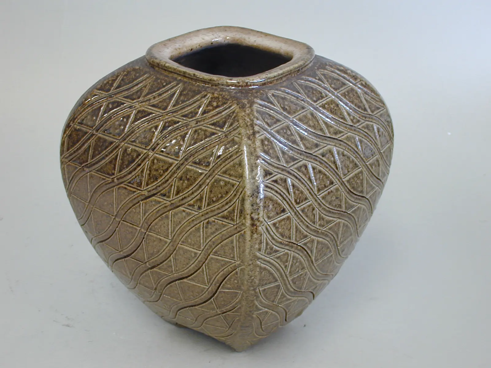
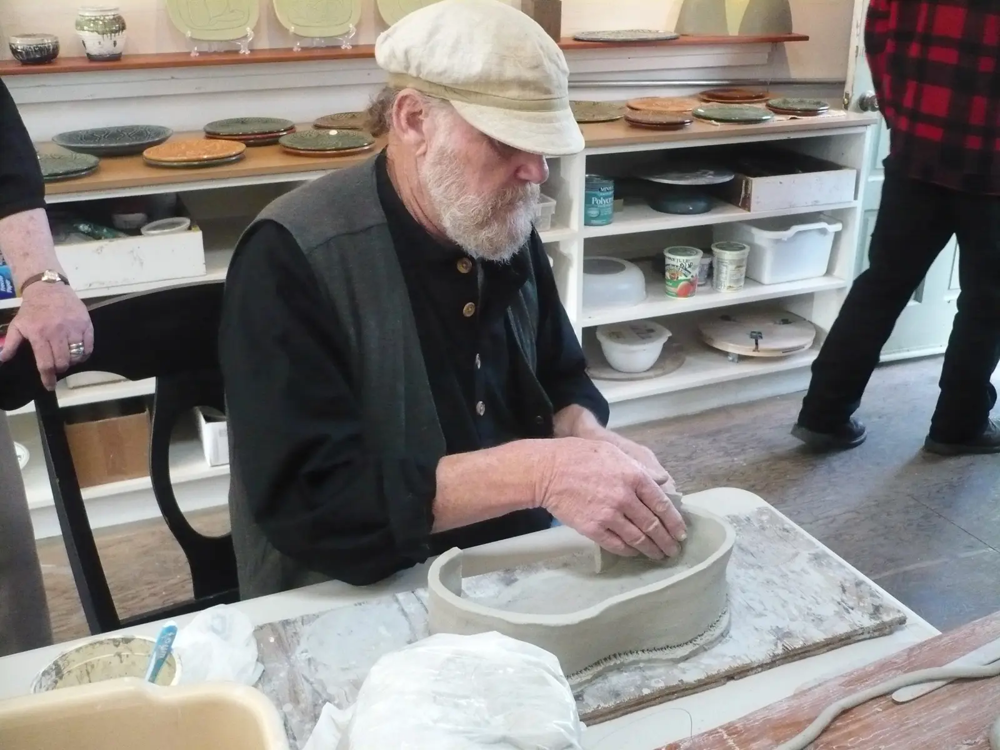
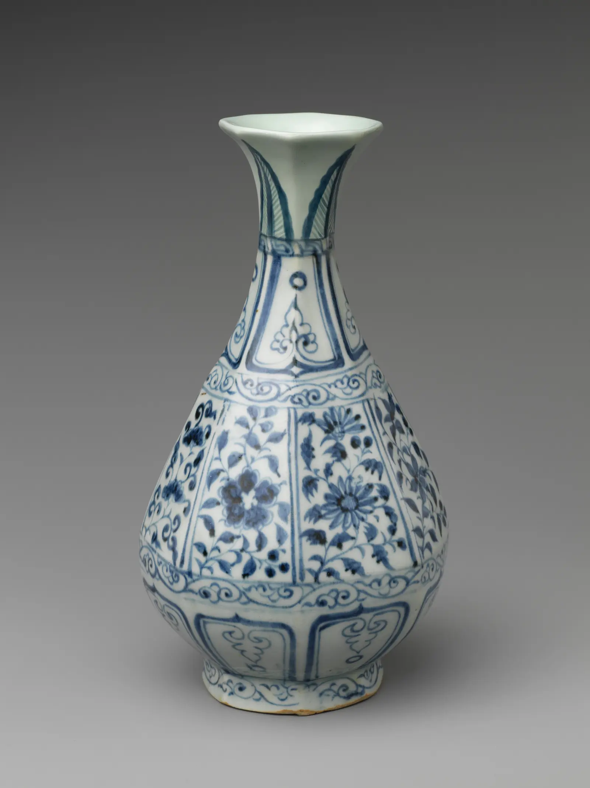
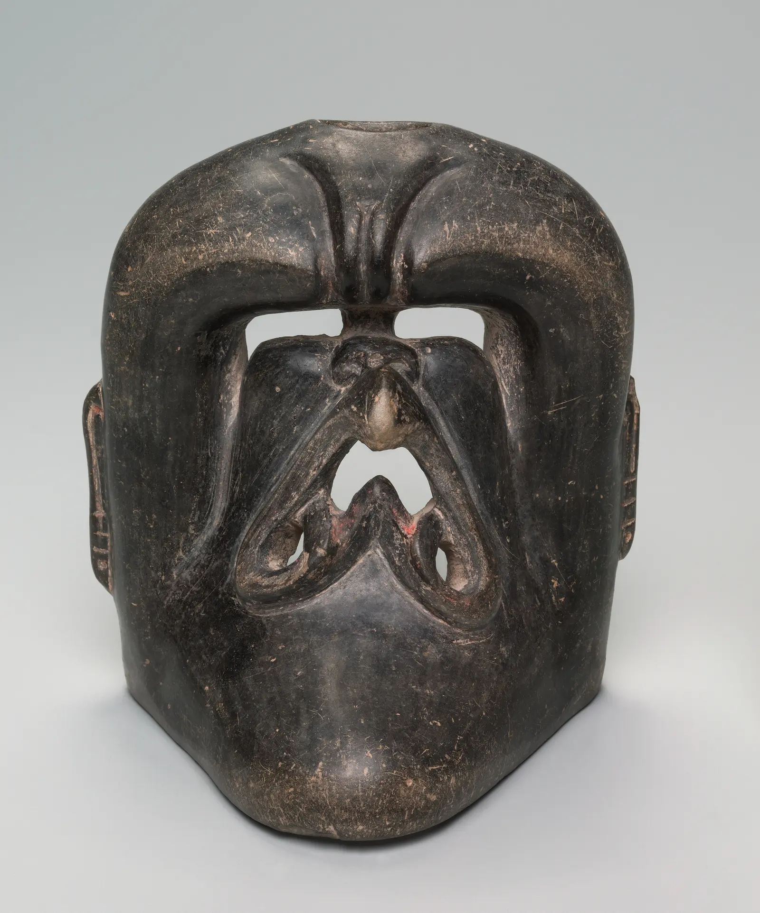
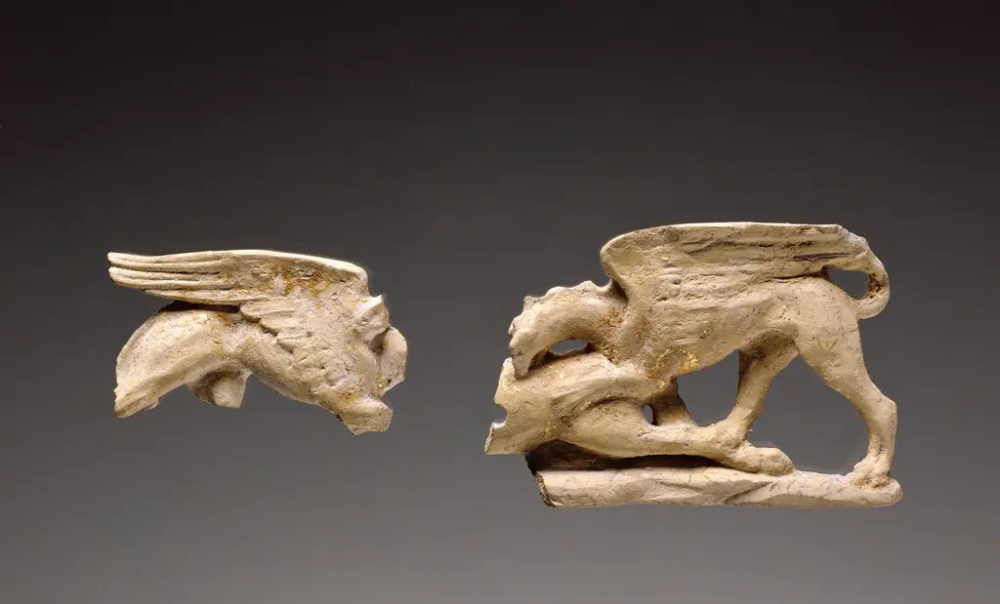

.jpg){kind=link}
Prerequisite
Moisture-state judgment, controlled compression, and secure joins from Phases 1–3.
Phase 04 · 8–11 hours
A slab remembers rolling, bending, support, and drying. Learn to manage the sheet before asking it to become architecture.

Aim
Moisture-state judgment, controlled compression, and secure joins from Phases 1–3.
Prepare stable slabs, choose a joining state, build crisp or soft geometry, and diagnose warp from process evidence.
Six variable tiles, seam coupons, a lidded box, a dart/mold study, and one folded vessel.
Why can a perfectly flat slab curve later—even when nobody touches it?
Rolling stretches and orients a sheet. Turning, compressing both faces, equalizing moisture, and controlling support reduce—not eliminate—the stresses that reappear in drying and firing.
Thickness and waiting times depend on clay, scale, support, and intended use. Use edge firmness, flex, surface sheen, and response to lifting to decide when to cut or join.
Roll six equal tiles. Change one condition per pair: one-direction versus rotated rolling; one-face versus two-face compression; exposed versus evenly covered drying. Mark the underside.

Bevels increase mating area and can keep exterior corners clean. Butt joins are direct but expose alignment errors. A supporting coil can reinforce an interior without replacing intimate contact.
Slab building demonstration by Ellin Beltz, CC BY-SA 3.0. Source
Build pairs of small L-shaped samples using butt, bevel, and supported interior joins. Keep slab state and dimensions consistent.
Remove a wedge and close the gap. The flat sheet becomes compound volume.
Let gravity and a form create a soft transition. Separate with appropriate material and remove support before shrinkage locks it.
Compress a controlled hinge rather than sharply creasing a dry or over-thin sheet.
Use the same paper outline to make a darted form, a draped form, and a folded form. Record how each method changes interior volume, edge behavior, and drying risk.
| Symptom | Inspect | Targeted response |
|---|---|---|
| Corner lifts | Compression, drying exposure, base constraint | Run a paired tile test; equalize drying. |
| Join opens | Clay states and contact line | Repeat coupon with matched moisture and better support. |
| Panel bows | Slab softness and handling stretch | Join later or add temporary non-sticking support. |
Inspiration · look comparatively
Use these as studies of planes becoming volume. Only the mask vessel has a cataloged modeled-clay-sheet construction; the others are formal comparisons.



Knowledge check · 3 questions
Choose one answer for each situation. Open a hint when needed; explanations appear after you check all three.
Phase checkpoint · 20 points
| Criterion | 1 | 2 | 3 | 4 |
|---|---|---|---|---|
| Slab preparation | Uneven/stretched | Some control | Even and compressed | Preparation fits form |
| Seams | Open/weak | Hold with flaws | Continuous | Geometry is resolved |
| Volume | Accidental | Partly controlled | Template becomes intended volume | Plane and volume reinforce each other |
| Drying | No plan | Generic plan | Evidence-based plan | Plan adapts to observed gradients |
| Diagnosis | Names defect | Guesses cause | Links process evidence | Designs a discriminating test |
A broad platter twists diagonally while its rim stays intact. List two competing causes and design one small comparison that would help separate them.
{kind=link}